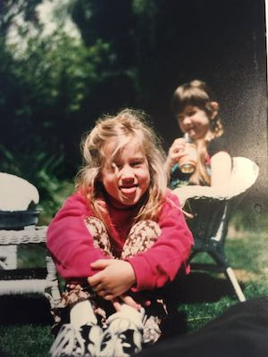

Phillippa Ramirez has a BA in Philosophy from the University of California Santa Barbara, and a MSc in Computational and Data Journalism from Cardiff University. She likes writing both code and stories. She is an aspiring machine learning expert, data scientist, and investigative journalist. She spent three years working at a tech startup in Budapest, Hungary. How she ended up in Budapest is a fun story, you should ask her about it. She spent two years studying in the UK, in both Cardiff and London. She spent a year wandering purposefully around Europe and plans to repeat the experience in Africa, Asia, and South America. She grew up in California, so naturally she is vegan, loves yoga, meditation, and the sun, and hates wearing shoes.
